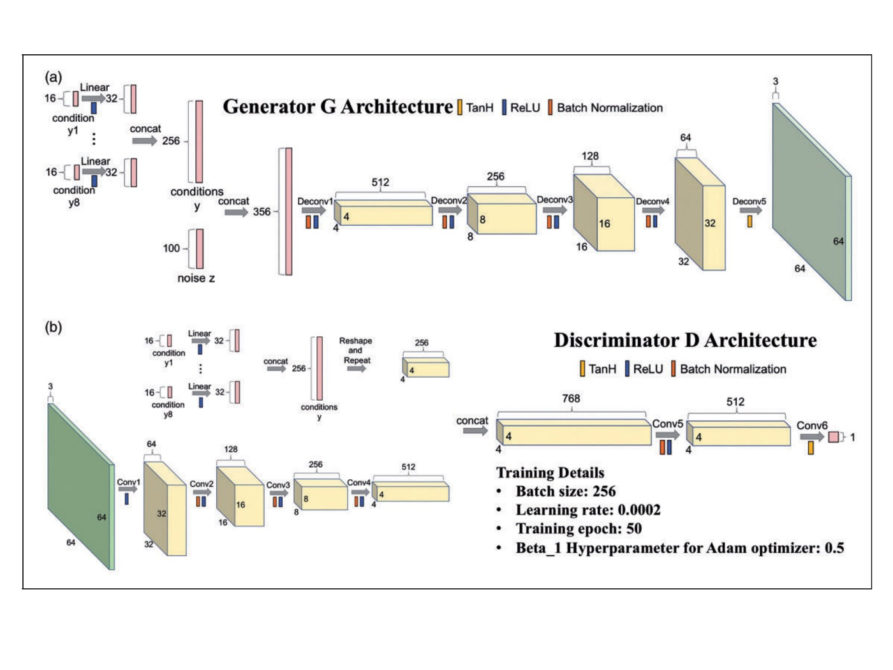
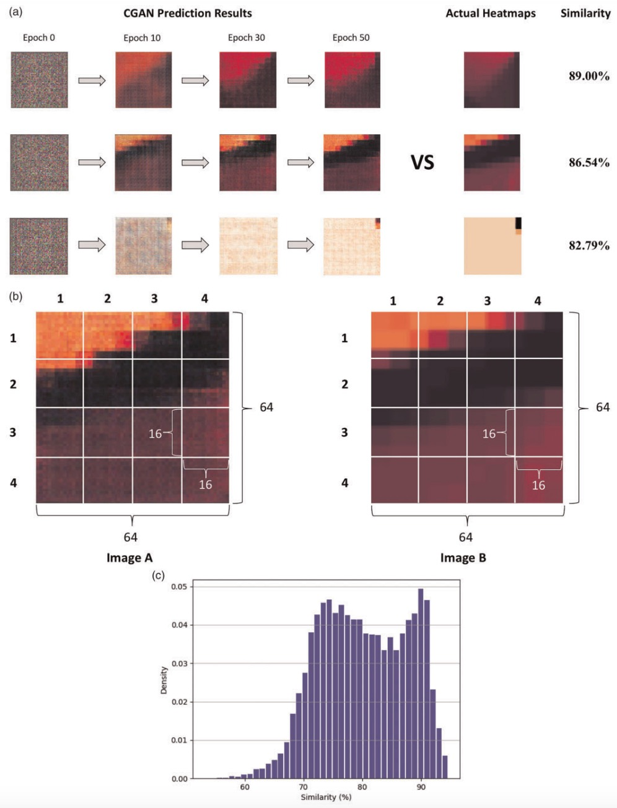

Incidents Impacts Predictions using Conditional GAN
I proposed a prediction framework which focuses on training a ML model to predict the speed heatmap associated with incidents. Heatmaps contain ideal information that depicts the spatiotemporal characteristics of incident-induced impacts, and are suitable objects for ML models to understand and predict. Because of the sparsity of incident data in the real world, we proposed a simulation approach to rapidly expand the training dataset, thus speeding up the model training process.

The C-DCGAN is employed to predict the speed heatmap and the mesoscopic DTA model DynusT was used to generate many training data. The architectures of Generator G and Discriminator D are shown in the figure above.

Predictions Results and Evaluations
As can be seen in Figure a, the initial images are nothing but random noise, but throughout the training process, the model is gradually shaping the random noise to capture the features. After 50 epochs, the CGAN-generated speed heatmap turns into an excellent spatiotemporal representation of the nonrecurring traffic patterns. By the subjective evaluation based on visual fidelity, the prediction results and simulation results have much in common in relation to shape features and colors. Though the random noise still exists after training for 50 epochs, it has no influence on evaluating the spatiotemporal impacts of the incidents.
The histogram of the similarities between prediction results and simulation results in 14,000 scenarios (the whole test dataset) is shown in Figure c. The majority of the similarities fall into the range between 75% and 90%, and the average similarity is 80.19%.
For more details, click here